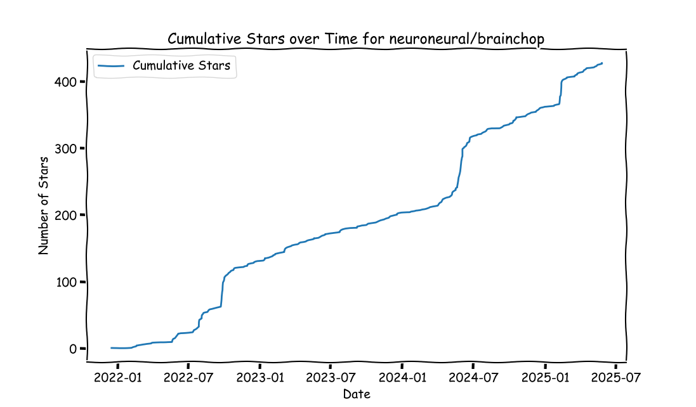
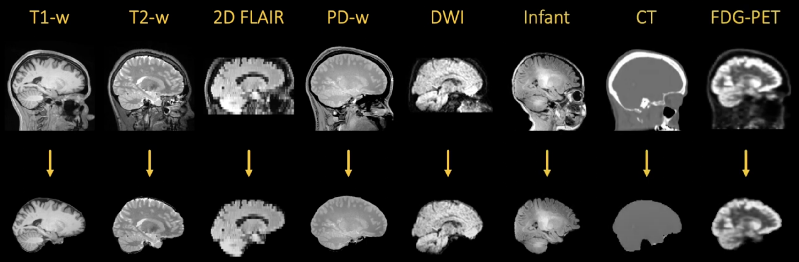
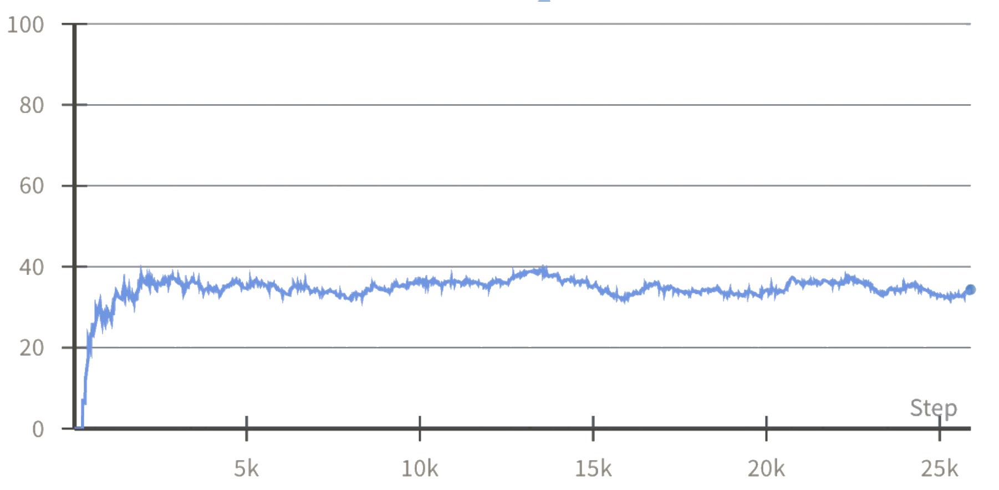
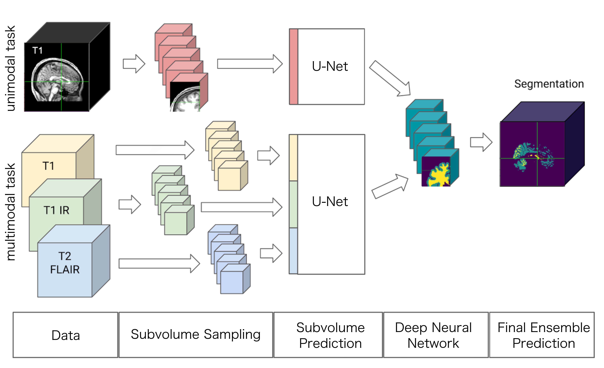

Brainchop and zero-footprint AI
Sergey Plis


Motivation
The Age of AI
publications, models, tools
Abundance, scarcity, absence
Only 40% of radiology AI studies shared models; deep learning models showed the lowest availability (11.5%)
Scaling laws gone awry
- NVIDIA GPU requirement
- Larger models are always better
- There are plenty of resources in the cloud
- We just need larger cloud/data-center
- And a nuclear reactor to power it (not a joke)
Privacy does matter
- Not all data can be transferred to the cloud
- For ethical and legal reasons
- To protect the trust of the users
- For technical or administrative reasons
- And even when it is possible obtaining all permissions takes skill and time

A good result today is better than a perfect result tomorrow
Skill issue

Our Goal
- AI models with top performance for regular users
- w/ Minimal (preferably zero) installation burden
Brainchop.org
Chris Rorden
Taylor Hanayik

Judging adoption by on
Brainchop
$ pip install brainchop
Brainchop for the most elegant UI

Under the hood
pip install mindfultensors
SynthStrip
The Catch: Training takes a week
GPU utilization Decouple training and generation
Mike Doan
really Decouple training and generation

Olaf Ronneberger
One U-shaped Network
U-Net

U-Net took over the world
But there is a problem
parameters and memory usageConsider a small U-net
Skip-connections need memory
We could train on subcubes
Full volume training and inference gives better accuracy
but requires 80Gb GPU for training and more than 10Gb for inference
Alex Fedorov
MeshNet
- 72516 vs 23523355 U-Net parameters
- but that's for 21 channel MeshNet
- 5 channel MeshNet is about 4x smaller
other Applications
Armina Fani
Mindgrab
Robust Skull Stripping of Any Modality on Any Device

Alex Fedorov
Tumor Detection

Other models (possibly)?
The browser is not forgiving, but MeshNet is easy to train
pip install brainchop is much simpler though
powered by
The Future
Faster personal devices, faster software
Personal devices are becoming much more powerful.
- This means current problems get solved faster.
- It also means complex "cloud" tasks are moving to the device itself.
- Goal: We need to have the tools ready for users to take advantage of this shift.